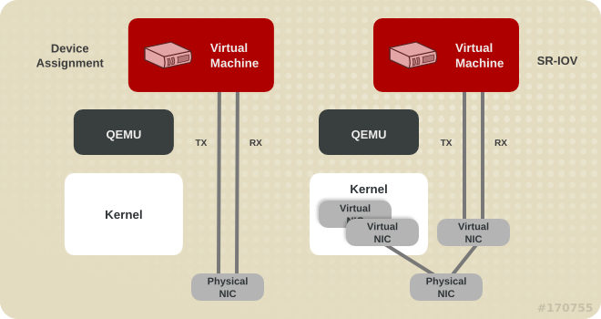

Virtualization Tuning & Optimization
Alex Williamson / alex.williamson@redhat.com
Agenda
Device types
Disk types
Tuning & Optimization
Graphics
Device Types
Emulated Devices
- I/O faults trap to QEMU
- Emulated device register set
- Examples: rtl8139, e1000, piix4-ide, lsi53c895a, ich9-ahci
- Pros:
- Out-of-the-box compatibility
- Migration compatibility
- Shares backing devices
- Cons:
- Poor performance
- High overhead
Paravirtual Devices
- Virtual device, designed for virtual machines
- No extraneous register set emulation
- I/O faults often handled in the host kernel (vhost)
- Examples: virtio-net-pci, virtio-blk-pci, virtio-scsi-pci
- Pros:
- Out-of-the-box compatibility (Linux-only)
- Migration compatibility
- Good performance
- Low overhead
- Shares backing devices
- Cons:
- Lacks out-of-the-box compatibility (non-Linux)
Assigned Devices
- Direct use of physical I/O device by guest VM
- Mostly eliminates hypervisor from I/O path
- Examples: vfio-pci (RHEL7), pci-assign (RHEL6)
- Pros:
- Best performance
- Lowest overhead
- Device compatibility and breadth (ex. GPUs)
- Cons:
- Incompatible with migration (use bonding/multipath)
- Requires host IOMMU support
- Exclusive device access
Summary
- Emulated devices
- Use only for bootstrap or low performance applications
- Paravirtualized devices
- Use wherever possible
- Assigned devices
- Use where absolute performance is required
Disk Types
QCOW2
- QEMU Copy-On-Write image format
- Disk blocks allocated as used
- Host file image or shared storage based
- Created with qemu-img (or other virt tools)
- Pros:
- Space efficient
- Supports live snapshots
- Supports base images
- Supports live storage migration
- Cons:
- Performance
- Space overhead when full
RAW
- Simple empty file container
- May be sparse (depends on host filesystem support)
- Host file image or shared storage based
- Created with qemu-img or dd (or other virt tools)
- Pros:
- No block management overhead
- Space efficient if sparse
- Performance (for allocated blocks)
- Supports live storage migration
- Cons:
- Some overhead on block allocation when sparse
- Manual offline snapshots or base for qcow2 snapshot
- Tricky sparse file handling
Block devices
- Local disk partition, LVM Volume, {i}SCSI LUN, Fibre Channel, etc.
- Flexibility of allocation depends on type
- Pros:
- Performance
- Offline snapshots (LVM snapshots or manual)
- Cons:
- No sparse allocation
- Shared storage required for migration
Summary
- QCOW2 images
- Use where live snapshotting, space efficiency, and live storage migration are needed
- RAW images
- Use where performance is favored over live snapshotting
- Block devices
- Use for best performance where migration is not required or shared storage is available
Notes:
Tuning & Optimization
Remove Unused Devices
- Unused devices are overhead
- Emulation is active even if little traffic over device
- Can affect overall VM performance
- Use virt-manager or edit domain XML to remove
CPU Tuning
- Do not overcommit CPUs
- For best performance, size VM to fit within NUMA node
- Copy host CPU configuration
- Note: Live migration requires compatible physical CPUs
- Set CPU topology
- One socket per vCPU is generally best
- Use multi-core sockets if necessary for licensing
- Only use threads with vCPU pinning
- Pin vCPUs to pCPUs for optimal performance
Memory Tuning
- Do not overcommit or over-size VM beyond what it needs
- For best performance, size VM to fit within NUMA node
- Huge pages
- CPUs support 4KB, 2MB, and sometimes 1GB page sizes
- Using large pages reduces VM memory overhead
- RHEL7 supports Transparent Huge Pages (THP) (default)
- Static huge pages can be used for:
- Consitent huge page performance
- Huge pages with device assignment
Network Tuning

virtio vs vhost
Network Tuning
SR-IOV Device Assignment
Network Tuning
- Pick the appropriate device model for your requirements
- Bridge tuning
- Enable expiermental zero-copy transmit
- /etc/modprobe.d:
- Multi-queue virtio-net
options vhost_net experimental_zcopytx=1 <interface type='network'>
<source network='default'/>
<model type='virtio'/>
<driver name='vhost' queues='N'/>
</interface> # ethtool -L eth0 combined M Block Tuning
- Caching mode
- none: no host caching, supports migration
- writethrough: host caching, writes to media
- writeback: host caching
- Multi-queue virtio-scsi
<disk type='file' device='disk'>
<driver name='qemu' type='raw' cache='writeback'/> <controller type='scsi' index='0' model='virtio-scsi'>
<driver queues='N'/>
</controller>
For more, google:
"Virtualization Tuning and Optimization Guide"
Note RHEL7 vs RHEL6 versions
Graphics
Emulated
- VNC, QXL/Spice
- Host-based
- 2D only
- Spice Features:
- Audio transport
- Encryption
- Video detection
- etc
GPU Assignment
- Supported only with specific cards:
- NVIDIA: K-series Quadro/GRID/Tesla
- Secondary GPU configuration
- Emulated graphics used for pre-boot, boot, and installation
- Assigned GPU only activated by guest GPU drivers
- Supports Windows and Linux guests
- Supports multiple GPUs per guest
- GPUs owned exclusively by guests
- No in-band or out-of-band remoting provided by Red Hat
GPU Assignment Tips
- Assigned GPU must not be primary graphics on the host
- Avoid host drivers (nouveau or nvidia)
- Use pci-stub.ids=10de:xxxx,10de:yyyy (GPU,audio)
- Avoid distro drivers in the guest
- Use nouveau.modeset=0 or rdblacklist=nouveau
- NVIDIA audio functions have broken INTx masking
- Leave audio function unassigned to guest
- Unsupported for assignment
GPU Future
- Virgil 3D
- KvmGT
- NVIDIA vGPU
Resources
- This talk:
http://awilliam.github.io/presentations/HP-Virt-Tuning-Opt-2014 - Red Hat Virtualization Tuning and Optimization Guide:
https://access.redhat.com/documentation/en-US/Red_Hat_Enterprise_Linux/7/Virtualization_Tuning_and_Optimization_Guide
Alex Williamson / alex.williamson@redhat.com